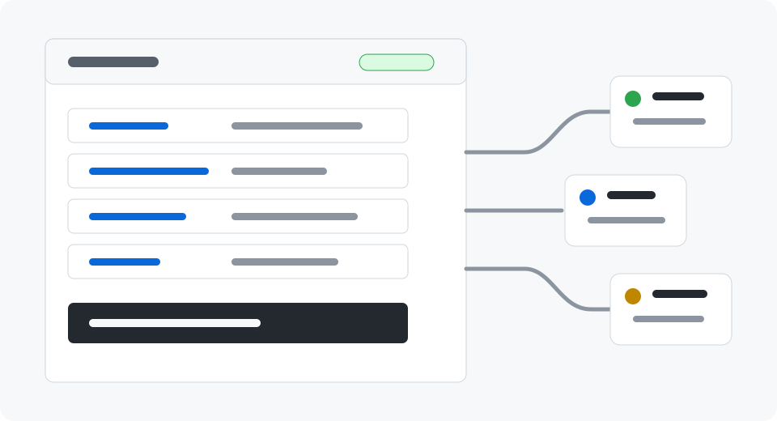

Desktop node
Qt 6 app with Ed25519 identity keys, local bare Git mirrors, profile metadata, BCH address fields, and repository-scoped chat channels.
Distributed source-code preservation
ForkMesh pairs local bare Git mirrors with signed identities and mainnode relay rooms. Pick a repository to browse its files live from the client hosting it.

ForkMesh is an open-source desktop node and relay prototype for hosting, mirroring, discovering, and discussing software projects without depending on one central code-hosting company.
Qt 6 app with Ed25519 identity keys, local bare Git mirrors, profile metadata, BCH address fields, and repository-scoped chat channels.
Python Cloudflare Worker routes encrypted WebSocket traffic through Durable Object rooms without storing message bodies.